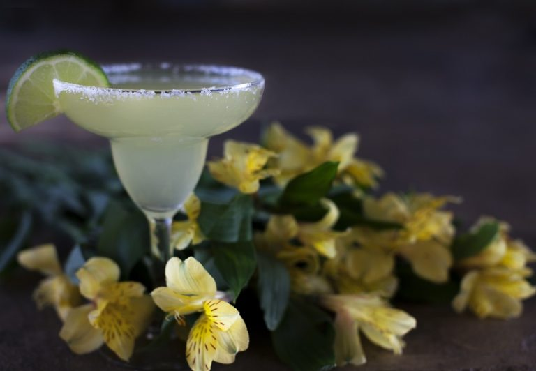

Маргарита
- серебряная текила – 40 мл
- апельсиновый ликер – 20 мл
- сок лайма – 40 мл
- лед – 150 грамм
История создания
Считается, что алкогольный коктейль Маргарита появился в 1936-1948 гг. в одном из баров Южной Америки. Установить точное место и автора рецепта не удалось. Версия о мексиканском происхождении напитка базируется лишь на том факте, что входящая в состав Маргариты текила наиболее распространена именно в Мексике.
Историки единодушны в одном – коктейль назван в честь женщины с именем Маргарита. Но вот кем она была: местной знаменитостью или любимой женщиной автора напитка, осталось неизвестным.
Способ приготовления
1. Наполнить шейкер льдом, добавить текилу, апельсиновый ликер (советую Cointreau), сок лайма (можно заменить лимонным). Встряхнуть.
2. Смочить края бокала в воде и опустить в тарелку с крупной солью. Убрать лишнюю соль, чтобы на бокале остался только тоненький ободок (см. рисунок).
3. Перелить содержимое шейкера в бокал через стрейнер (ситечко). Украсить долькой лимона или лайма.

Международная ассоциация барменов (IBA) предлагает смешивать ингредиенты в пропорции 7:4:3 (семь частей текилы, четыре апельсинового ликера и три части сока лайма). Но исторически правильной считается пропорция 2:1:2.
Как пить маргариту
«Маргариту» пьют небольшими глотками, предварительно подержав напиток во рту пару секунд, чтобы осталось долгое послевкусие. Женщинам коктейль подают с соломинкой. Калорийность одной порции – 280 калорий. Крепость – 24-25%.